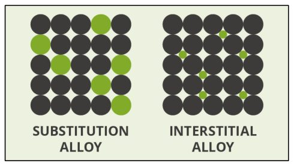
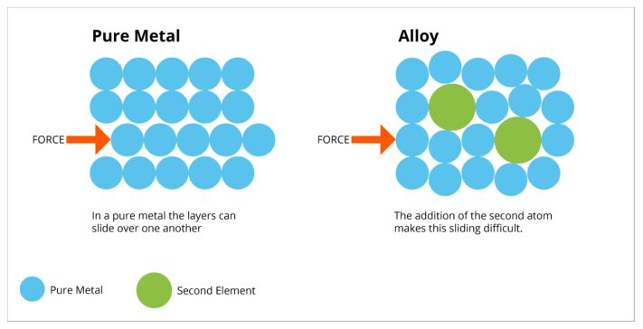
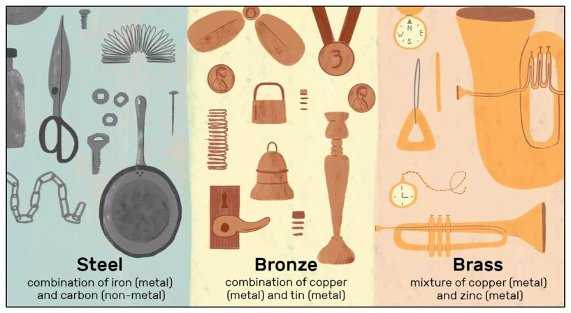

5.1 Alloys
An alloy is a material made by mixing two or more elements, usually metals (non-metals can be included). Brass is copper + zinc; steel is iron + carbon. Alloys often have improved properties such as greater strength, durability or corrosion resistance.
There are two main types:
- Substitutional alloys: atoms of similar size replace each other in the lattice (e.g. brass).
- Interstitial alloys: smaller atoms fit into the gaps between the larger atoms (e.g. steel, with carbon between iron atoms).

Steel is used in construction because it is strong; brass is used for locks and bearings because it resists corrosion; beryllium copper is used in electrical connectors and tools because it conducts well and doesn't spark. Many alloys, like brass and bronze, are affordable because they are cheap to produce.
5.2 Properties of Alloys
| Property | Description |
|---|---|
| Harder and less malleable | Atoms of different sizes distort the regular layers, so they can't slide as easily |
| Lower electrical conductivity | The irregular arrangement makes it harder for electrons to flow |
| Lower melting points | Alloys usually melt at lower temperatures than the pure metals, due to the disrupted lattice |
| Stronger and more durable | E.g. carbon atoms in steel fill spaces between iron atoms |
| Tailored properties | Composition can be chosen for corrosion resistance, strength or conductivity |

| Alloy | Metals | Special properties |
|---|---|---|
| Brass | 70% copper, 30% zinc | Doesn't corrode; attractive gold colour; easily worked |
| Tool steel | Iron, carbon, tungsten, chromium | Very hard and wear-resistant |
| Steel | Iron, carbon | Strong, durable, versatile: construction, tools, infrastructure |
| Stainless steel | 70% iron, 1% carbon, 20% chromium, 9% nickel | Doesn't corrode; shiny, strong and hard |
| Bronze | 95% copper, 5% tin | Shiny, attractive, doesn't corrode |
| Solder | 70% tin, 30% lead | Solid at room temperature but melts easily |
| Dental amalgam | Mercury, silver | Soft, then sets hard; chemically inert |

PracticeAlloy ingredients
Brass
Bronze
Steel
Solder
Stainless steel
PracticeInterstitial or substitutional?
In steel, small carbon atoms fit into the gaps between the larger iron atoms. Steel is a:
PracticeTest your understanding
- Draw and label a substitutional alloy and an interstitial alloy. How does each structure affect its properties?
- Compare a pure metal (e.g. copper) with an alloy made from it (e.g. brass) in strength, malleability and corrosion resistance.
- Research an industry that relies on alloys and explain why one alloy's properties suit it.
- Explain why alloys are typically stronger and less malleable than pure metals.
Model answer
- Substitutional: some lattice positions are taken by different atoms of similar size. Interstitial: small atoms sit in the gaps between the larger metal atoms. In both, the regular layers are disrupted, so they can't slide easily: the alloy is harder and stronger.
- Brass is stronger and harder than copper, less malleable, and more corrosion-resistant; copper is softer, more malleable and a better conductor.
- E.g. aerospace uses titanium alloys (light, strong, corrosion- and heat-resistant); medicine uses stainless steel for instruments (doesn't corrode, easy to sterilise); construction uses steel (strong and cheap).
- Atoms of a different size distort the regular lattice, so the layers of ions can't slide over each other easily. This makes the alloy harder and stronger but less malleable.
How did you go?